図解：エジプトの美術
エジプト美術の流れ
- 前3100年頃
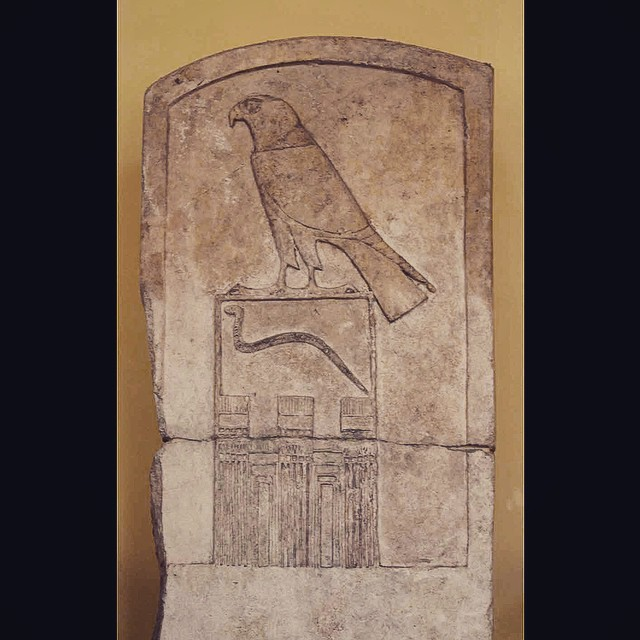
統一と初期王朝墓にレリーフ
神を上、王を下に - 古王国時代

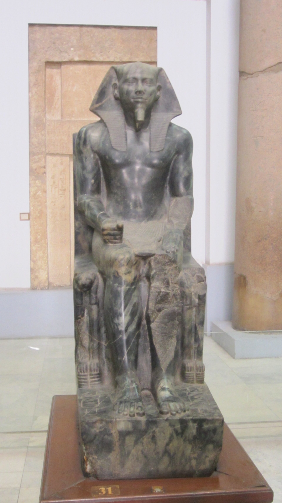
巨大ピラミッド王権が絶対に
王の彫像も作る - 新王国時代
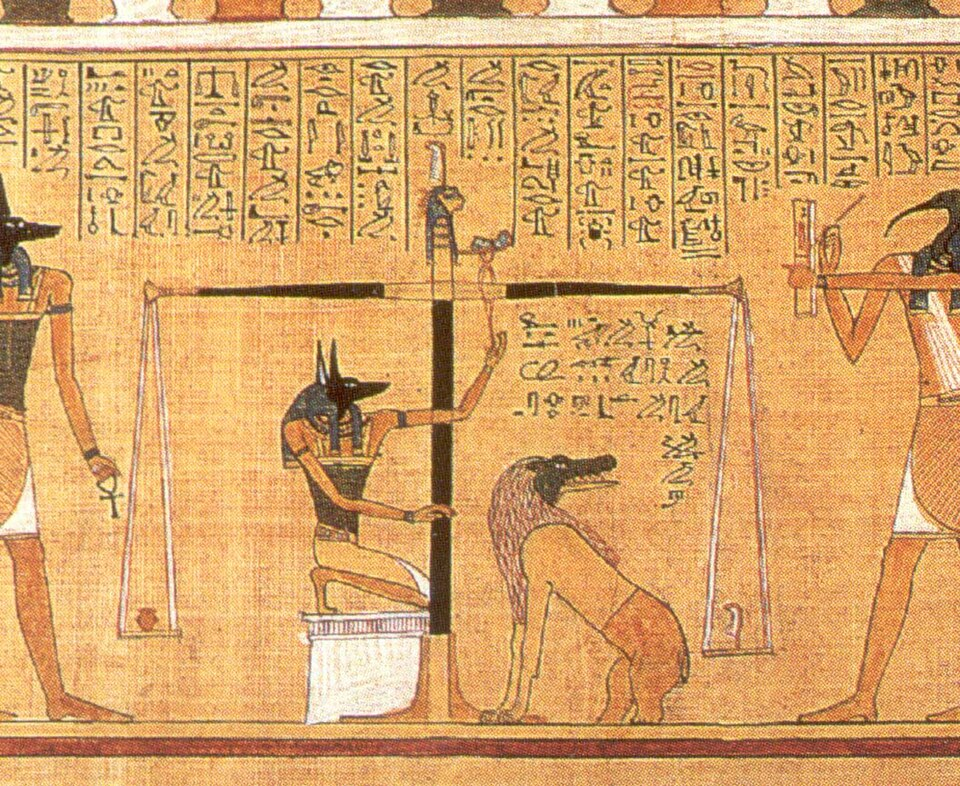
《死者の書》パピルスの呪文集
伝統の描き方 - 新王国時代
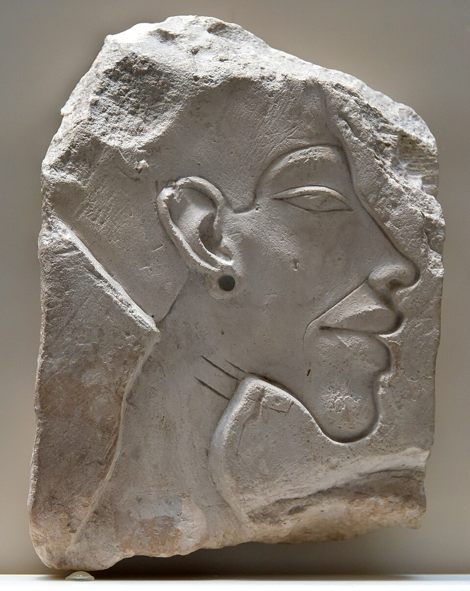
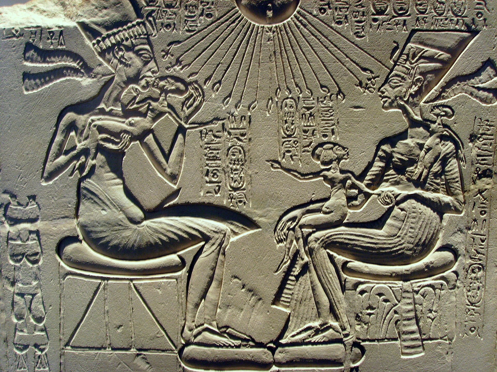
アマルナ美術アメンホテプ4世
自然主義的な表現 - 王の死後
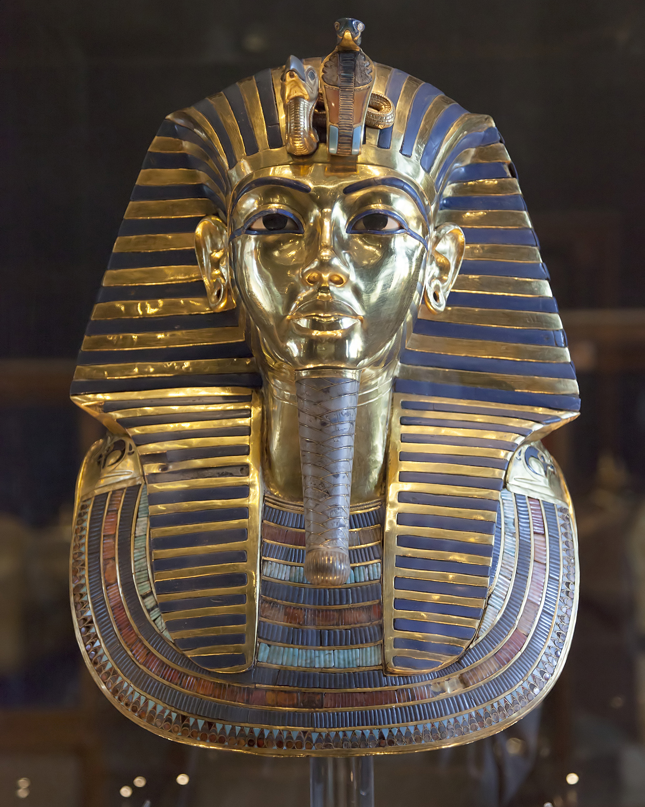
様式が伝統へ戻る黄金のマスクに
写実の名残
メソポタミアとの違い
図版の出典
- 《ジェト王の碑》作者不詳（古代エジプト）：出典（CC0）
- 《ギザの三大ピラミッド》建造者不詳（クフ王・カフラー王・メンカウラー王の時代）：出典（CC BY-SA 3.0）
- 《カフラー王坐像》作者不詳（古代エジプト）：出典（CC0）
- 《フネフェルのパピルス（《死者の書》・審判場面の部分）》作者不詳（古代エジプト）：出典（Public domain）
- 《アメンホテプ4世（アクエンアテン）の肖像浮彫断片》作者不詳（古代エジプト）：出典（CC BY-SA 4.0）
- 《アクエンアテンとネフェルティティ、三人の娘（家の祭壇）》作者不詳（古代エジプト）：出典（Public domain）
- 《ツタンカーメンの黄金のマスク》作者不詳（古代エジプト）：出典（Public domain）
重要人物
ピラミッドを建てた王
- クフ王古王国の王三大ピラミッドの一つを築く
- カフラー王古王国の王三大ピラミッドの一つ。正面を向く坐像
- メンカウラー王古王国の王三大ピラミッドの一つを築く
- センウセレト2世中王国の王日干しレンガのラフーンのピラミッド
新王国の王
エジプト美術の特徴
ナイル川の文明と長く続いた伝統
動画 0:36～ティグリス川・ユーフラテス川のほとりでメソポタミア文明が栄えていた頃、ナイル川でも農業が発達し、エジプト文明が起こった。エジプトの人々はファラオを絶対的な君主とし、3000年以上にわたって変わらぬ固有の美術を展開していった。
メソポタミアでは支配者が変わるたびに美術も変化した。一方、エジプトで長く伝統が続いた背景には、地理的な違いがあった。平地であったメソポタミアは侵略を受けやすかったが、谷や砂漠の多いエジプトは外敵の侵略を受けにくかった。そのため支配者は身内で受け継がれ、美術品も伝統に従って作られた。
変化の少なさは、美術品の価値が低いことを意味しない。ピラミッドやツタンカーメンのマスクなど、広く知られる優れた美術品が生まれた。エジプト美術は大きく発展していくというよりも、変わらないことによって独自の様式を保ったのである。
死者のための美術と肉体の保存
動画 1:24～エジプト美術の特徴は、美術品が死者のために存在したことである。古代エジプトでは、死者の魂は神々のもとへ上り、死後の世界で生きると考えられた。そこで生き続けるには、現世で肉体が保存されていなければならなかった。
死後の世界を信じたのは、古代エジプトの人々だけではない。生物についての知識を持たなかった昔の人々は、死後に肉体が動かなくなるのは魂が抜け落ちたためと考えた。霊は天高いところから生きている人々を見守っているとされ、そのため遺体を丁重に扱うようになった。
キリスト教では、最後の審判の日に地中から肉体が復活すると考え、土葬を選んだ。一方、仏教では、死後の魂が新しい肉体へ輪廻転生すると考えられ、煙に乗せて魂を天高く飛ばすために火葬を選んだ。このように、死後についての考え方は、遺体の扱い方にも結びついていた。
エジプトの美術品も、エジプト固有の死後についての考え方に沿って作られた。ピラミッドは、王の遺体を永遠に保つための墓として機能した。また、遺体が腐敗しないようにミイラにする技術も発展した。遺体がよい状態で発見されるのは、この技術によるものである。
初期王朝と古王国
初期王朝：墓、神と王、人物の表現
動画 2:40～紀元前3100年頃にエジプトが統一され、初期王朝時代が始まった。この時からすでに、マスタバ形式と呼ばれる墓が作られていた。石を積み上げていくような形は、ピラミッドの原型とも考えられている。
レリーフも発展し、墓に添えられた。《ジェト王の碑》の鳥は、天空の神ホルスを表している。その下に刻まれた蛇は、当時の王の名を象形文字にしたものである。死後の世界では神々の方が上位にあるため、神を上に、王を下に置く構図になっている。

《ジェト王の碑》
- 作者
- 作者不詳（古代エジプト）
- 制作時期
- 前3100〜2900年頃（第1王朝・ジェト王時代）
- 所蔵館
- ルーヴル美術館、パリ（E 11007）
- 素材・形式
- 石灰岩・浮彫の石碑
出典・画像について
上部にホルスのハヤブサ、その下に王名を表す蛇が刻まれています。
画像出典：akhenatenator
CC0
メソポタミアのハンムラビ法典にも、神と王が表されていた。王の威厳を示すには、神との関わりを強調することが重要だった。
死後の世界で王の世話をする召使いも必要とされた。はるか昔には、召使いや奴隷が犠牲となり、権力者と一緒に埋葬された。しかし、この方法は残酷であるだけでなく、損失も大きかった。そのため、生きた召使いの代わりに、美術品として像を作って埋葬するようになった。
各部分の特徴を組み合わせる描き方
動画 3:38～平面に表された人物は、頭が横を向いているのに、体は正面を向いているように見える。永遠性を重視するエジプト美術では、体の各部分を、それぞれの特徴が最もよく分かる角度で描いたのである。

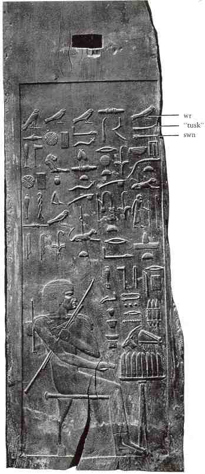
画像を拡大 ＋《ヘシラの肖像を刻んだ木製パネル》
- 作者
- 作者不詳（古代エジプト）
- 制作時期
- 前2686〜2613年頃（古王国・第3王朝）
- 所蔵館
- エジプト考古学博物館、カイロ
- 素材・形式
- 木製の浮彫パネル
出典・画像について
人物の頭・目・上半身・脚の表し方を確認するための図です。召使いの像ではなく、ヘシラ本人の肖像を刻んだパネルです。古い白黒の複製画像のため、拡大時の細部には限界があります。
画像出典：Wikimedia Commons（原画像出典：Creighton University）
Public domain
頭を正面から描くと、頭の形がよく分からない。そのため、頭は横から見た形で描く。一方、目は正面から見た方が特徴をつかみやすいので、正面を向けて描く。このように角度を組み合わせることで、各部分の特徴が最もよく表れるようになる。平面に描かれる人物は、その後も同じ構造を保っていく。
鳥の絵は極めて写実的に描かれ、画力の高さがうかがえる。このことから、人間をリアルに描く能力がなかったのではなく、あえて決められた描き方を選んでいたことが分かる。決まり事に従って描くことが、何よりも重要だったのである。

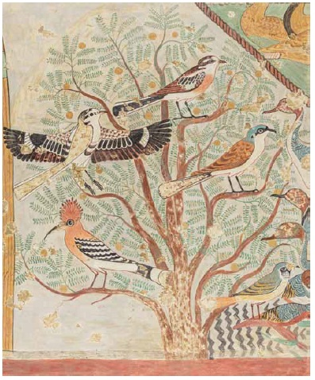
画像を拡大 ＋《しげみの中の鳥（クヌムホテプ2世墓壁画の部分・模写図版）》
- 作者
- 原壁画：作者不詳／模写：ニーナ・デ・ガリス・デイヴィス
- 制作時期
- 原画：前1897〜1878年頃（中王国・第12王朝）／掲載図版：20世紀
- 原画の所在地
- 原壁画：ベニ・ハサン、クヌムホテプ2世墓（第3号墓）、エジプト
- 素材・形式
- 墓室壁画の模写図版
出典・画像について
動画と同じ、木の枝に鳥が集まる場面の模写図版。出典にDaviesの図版集（1933年）と記載されています。画像の原寸は397×478ピクセルで、拡大時の精細さに限界があります。
作品の年代について
画面には『紀元前2400年頃・古王国時代』とありますが、同じ鳥の図を持つクヌムホテプ2世墓は中王国時代・第12王朝です。同墓の壁画を記録したメトロポリタン美術館の資料では原画の時期を前1897〜1878年頃としています。そのため本文の『ほぼ同時期』という比較は採用せず、写実的な鳥と定型的な人物表現の対比を保持しました。掲載画像は古代壁画を写したニーナ・デ・ガリス・デイヴィスの図版です。
古王国：巨大ピラミッドと彫像
動画 4:25～古王国時代になると、エジプト美術はさらに壮大なものになった。王の権力が、より絶対的なものとなったためである。こうして生まれたのが、クフ王、カフラー王、メンカウラー王の巨大ピラミッドである。ピラミッドはほかにも数多くあるが、この三つは特によく知られている。
画像を拡大 ＋
《ギザの三大ピラミッド》
- 作者
- 建造者不詳（クフ王・カフラー王・メンカウラー王の時代）
- 制作時期
- 前3千年紀・古王国第4王朝
- 所在地
- ギザ、エジプト
- 素材・形式
- 石造の王墓群
出典・画像について
この時代には、死後の魂にとって、遺体の保存だけでは不十分だと考えられるようになった。彫像を残すことで、さらに確実に死後の世界に存在し続けられると考えたのである。王は彫刻家に命じて自分の彫像を作らせ、彫刻の技術も高まっていった。こうした彫像は、後のギリシャ美術にも影響を与えていく。

《カフラー王坐像》
- 作者
- 作者不詳（古代エジプト）
- 制作時期
- 前2500年頃（古王国・第4王朝。年代推定には幅がある）
- 所蔵館
- エジプト考古学博物館、カイロ
- 素材・形式
- 閃緑岩の坐像
出典・画像について

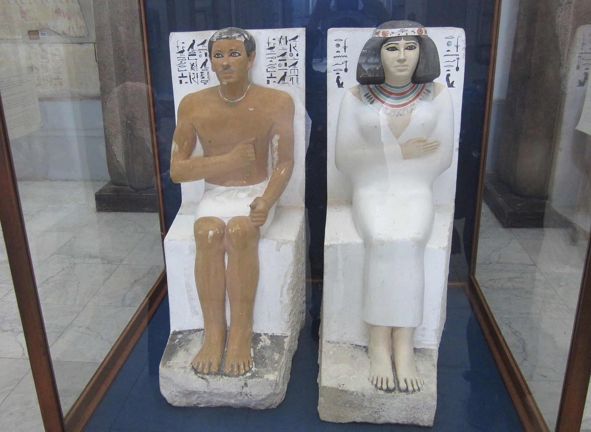
画像を拡大 ＋《ラーホテプとノフレトの像》
- 作者
- 作者不詳（古代エジプト）
- 制作時期
- 前2613〜2589年頃（古王国・第4王朝）
- 所蔵館
- エジプト考古学博物館、カイロ
- 素材・形式
- 彩色石灰岩の坐像
出典・画像について
王子ラーホテプと妻ノフレトの二体の坐像。ノフレトは動画の表記では「ネフェルト」です。
作品情報：エジプト考古学博物館：Rahotep and Nofret · Wikimedia Commons：画像・利用条件
正面性と静止不動の彫刻
動画 5:04～エジプトの彫像には、正面を向いているという共通点がある。動きのある表現は、あまり好まれなかった。
古代ギリシャ彫刻の《円盤投げ》は、今にも円盤を投げそうな迫力を持っている。動作の一部分を切り取った、動きのある作品である。それに対して、エジプトの彫像は静止不動で、いつまでも同じ姿勢を保っているかのように見える。これも永遠性を重視するエジプト美術の考え方に通じている。

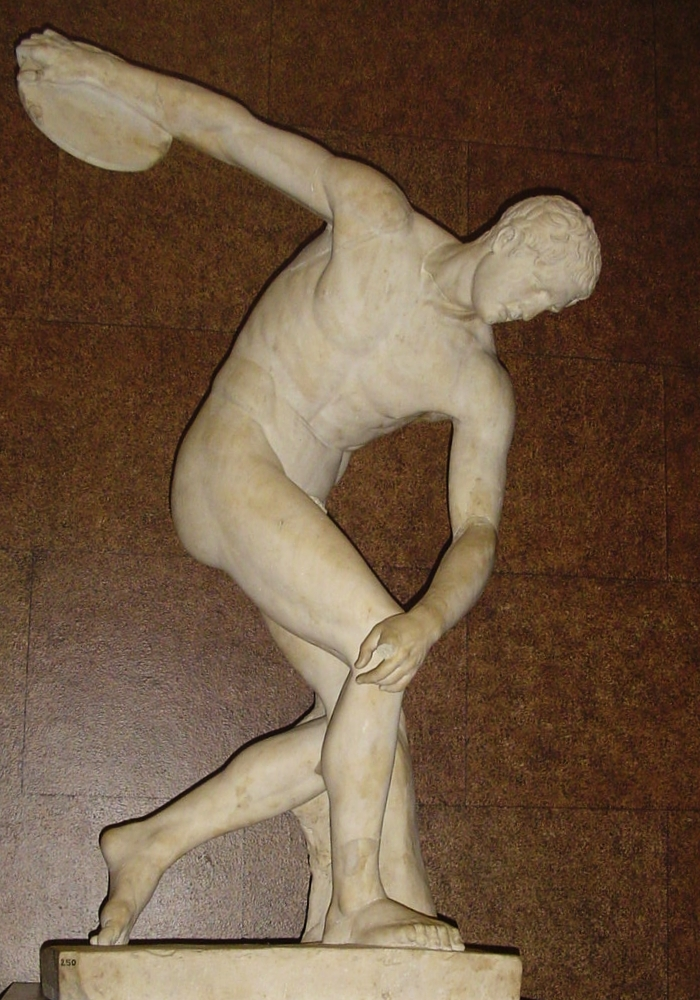
画像を拡大 ＋《円盤投げ（タウンリーのディスコボロス）》
- 作者
- 原作：ミュロン／掲載像：ローマ時代の模刻、作者不詳
- 制作時期
- 原作：前5世紀／掲載像：ローマ時代
- 所蔵館
- 大英博物館、ロンドン（1805,0703.43）
- 素材・形式
- 大理石（青銅原作の模刻）
出典・画像について
動画の下を向いた頭部を持つ、同じタウンリー像。古代ギリシャの青銅原作そのものではなく、ローマ時代の模刻です。動作の一瞬を捉えた構成を比較します。
彫像では、平面の人物表現のように、頭を横向きにする必要はない。立体であれば、どの角度からでも見ることができるからである。
中王国と新王国
中王国：ピラミッドから神殿・祭殿へ
動画 5:40～中王国時代にも、古王国時代を継いでピラミッドが建設された。ただし、安く作られた結果、その多くは崩壊している。例えば、センウセレト2世が建てたラフーンのピラミッドは、材料が日干しレンガであったため風化し、あまり形を残していない。日干しレンガは、メソポタミアの建物にも使われていた材料である。

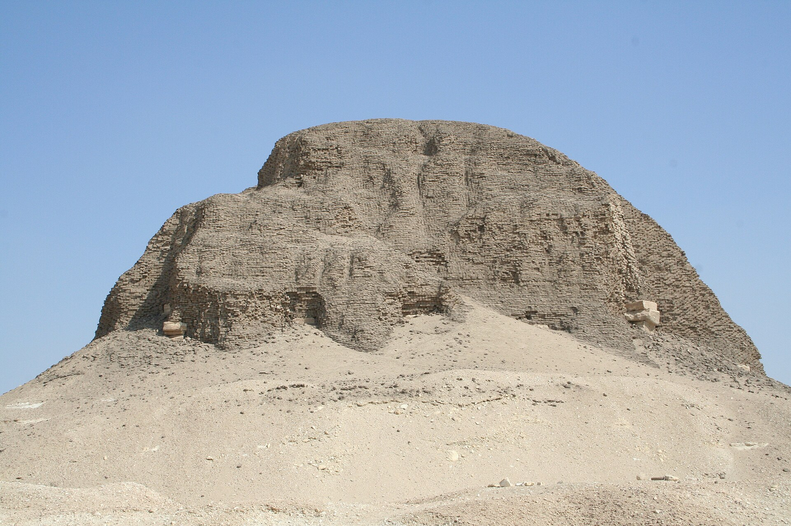
画像を拡大 ＋《ラフーンのピラミッド》
- 作者
- 建造者不詳（センウセレト2世の時代）
- 制作時期
- 前19世紀頃（中王国・第12王朝）
- 所在地
- ラフーン、エジプト
- 素材・形式
- 日干しレンガを主要材料とする王墓
出典・画像について
巨大ピラミッドを建てていた時のような絶大な力は失われていたが、そもそもピラミッド建設自体が下火になっていた。代わりに神殿や祭殿が数多く建築され、オシリス柱やハトホル柱といった独特の柱が現れた。こうした新しい試みがあっても、平面に描かれる人物像は、引き続き伝統に従っていた。

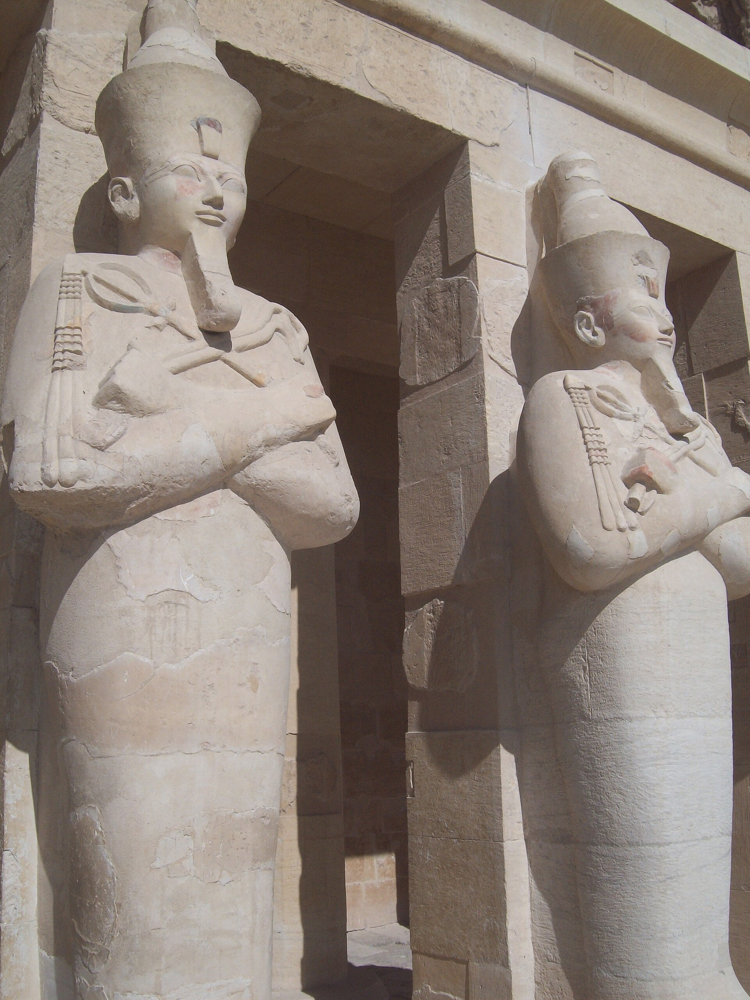
画像を拡大 ＋《ハトシェプスト女王葬祭殿のオシリス柱》
- 作者
- 建造者：古代エジプトの工人／設計者：センエンムト
- 制作時期
- 前1473〜1458年頃（新王国・第18王朝）
- 所在地
- デイル・エル・バハリ、ルクソール、エジプト
- 素材・形式
- 石造の葬祭殿・オシリス像を伴う列柱
出典・画像について
女王をオシリスの姿で表した像が柱に沿って並ぶ、動画と同じ葬祭殿の写真。本文の中王国の説明とは年代が異なります。
画像出典：Kyera Giannini / ISAW・Wikimedia Commons
CC BY 2.0
作品情報：エジプト観光・考古省：Hatshepsut Temple · Wikimedia Commons：画像・利用条件
柱の写真と時代区分について
中王国の説明に使われた写真は、ハトシェプスト女王葬祭殿のオシリス像を伴う列柱です。この建物は新王国時代・前15世紀のもので、中王国の建物そのものではありません。柱の形式を確認する図として掲載し、建物の年代はキャプションで区別しました。ハトホル柱は本文の言及を保持していますが、別の神殿の写真で代用していません。
新王国：パピルスに記された《死者の書》
動画 6:27～新王国時代の特徴の一つに、パピルスによる《死者の書》の作成がある。パピルスは、当時使われていた紙のようなもので、英語の「ペーパー」の語源としても知られている。
《死者の書》は、死後の国で復活したり、暮らしたりするために必要な呪文集である。ヒエログリフで記され、巻物として棺に添えられた。

《フネフェルのパピルス（《死者の書》・審判場面の部分）》
- 作者
- 作者不詳（古代エジプト）
- 制作時期
- 前1275年頃（新王国・第19王朝）
- 所蔵館
- 大英博物館、ロンドン（EA 9901-3）
- 素材・形式
- パピルスに彩色
出典・画像について
動画と同じ《フネフェルのパピルス》の審判場面の部分図。似た場面を持つ《アニのパピルス》ではありません。掲載ファイルの年代表記には幅があり、制作年は所蔵館の教材資料に合わせています。
画像出典：Wikimedia Commons（複製画像出典：National Geographic）
Public domain
古王国時代には、ピラミッド・テキストと呼ばれるものがピラミッド内部に記されていた。しかし、新王国時代にはピラミッドがほとんど建設されていない。《死者の書》が作られるようになった背景には、この変化もあったと考えられる。
《死者の書》に描かれる人物も、伝統的な表現を保っている。顔と両足は横向き、上半身と目は正面向きという、決まった描き方が続いている。
アマルナ美術とその後
アメンホテプ4世と自然主義的な表現
動画 7:13～新王国時代には、長く続いた伝統を打ち破ろうとした王がいた。アメンホテプ4世、すなわちアクエンアテンである。その美術は自然主義的で、従来の伝統には縛られなかった。それまでの描き方の名残はあるものの、伝統的な様式と比べると大きな違いが見られる。

《アクエンアテンとネフェルティティ、三人の娘（家の祭壇）》
- 作者
- 作者不詳（古代エジプト）
- 制作時期
- 前1351〜1334年頃（新王国・第18王朝）
- 所蔵館
- ベルリン国立博物館群・エジプト博物館、ノイエス・ムゼウム（ÄM 14145）
- 素材・形式
- 石灰岩の浮彫
出典・画像について
画像出典：Gerbil / Wikimedia Commons
Public domain
作品情報：ベルリン国立博物館群：ネフェルティティと家族図 · Wikimedia Commons：画像・利用条件
制作メモ
動画の家族図と、人物配置・子どもの数・アトンの光線を照合した同じ作品。
画面右側のレリーフの作品名・所在を確実に特定できないため、似た作品では代用していません。
《従来様式の比較レリーフ（作品名未確認）》
- 作者
- 未確認
- 制作時期
- 未確認
- 所在
- 未確認
- 素材・形式
- 人物と神を表した浮彫（画面で確認）
出典・画像について
作品情報 · 同定保留
アマルナ美術と並べて紹介された比較図。
制作メモ
原動画7:24から確認できます。
比較画像の同定保留
7:24頃にアマルナ美術の家族図と並べられる従来様式のレリーフは、作品名・所在を確実に特定できませんでした。似た別作品では代用せず、画像を掲載していません。従来の人物表現については、先に掲載したヘシラの木製パネルと《フネフェルのパピルス》で確認できます。
この変化は、アメンホテプ4世が信仰した宗教観に関係している。エジプトで元来信じられていたのは、アヌビスやホルスなど、さまざまな神々のいる多神教だった。これに対して、アメンホテプ4世は、アトンを唯一神とする一神教に没頭した。
アトンの教えは、自然の摂理に従うようにというものだった。そのため、不自然で形式ばった伝統的な様式ではなく、リアルで写実的な表現が取られるようになった。
アメンホテプ4世がこの宗教を信仰するに至った背景には、当時の政治情勢なども関係していたらしい。ただし、その具体的な理由はここでは明らかではない。
肖像とアマルナ美術の行方
動画 8:14～アメンホテプ4世の肖像は、美化するのではなく、ありのままの姿を表している。広く読まれた美術史の本『美術の物語』では、その容貌が「醜男」と評される一方、そうした弱点も含めて、自分をさらけ出そうとしたことが述べられている。

《アメンホテプ4世（アクエンアテン）の肖像浮彫断片》
- 作者
- 作者不詳（古代エジプト）
- 制作時期
- 前14世紀・アマルナ時代（新王国・第18王朝）
- 所蔵館
- ベルリン国立博物館群・エジプト博物館、ノイエス・ムゼウム（ÄM 14512）
- 素材・形式
- 石灰岩の浮彫断片
出典・画像について
画像の撮影年と作品の制作時期は区別しています。
画像出典：Osama Shukir Muhammed Amin FRCP(Glasg)
CC BY-SA 4.0
作品情報：ベルリン国立博物館群：ÄM 14512 · Wikimedia Commons：画像・利用条件
制作メモ
横顔、耳、首の形と収蔵番号を照合した同じ肖像断片です。
アメンホテプ4世は伝統を打ち破ろうとしたが、その死後には、元の伝統的な様式へ戻ってしまった。ただし、彼の時代の美術はアマルナ美術と呼ばれ、多くの美術史の本で、それまでのエジプト美術とは異質なものとして紹介されている。長年続いた伝統を変えることは、それほど難しかったのである。
ツタンカーメンと黄金のマスク
動画 8:53～アメンホテプ4世の子に当たるのが、よく知られるツタンカーメンである。若くしてファラオとなり、20歳になる前に亡くなったため、政治にはあまり関与せず、大きな功績も残さなかった。
一方、歴代の王が眠る王家の谷では、ほかの王の墓が盗掘される中、ツタンカーメンの墓はよい状態で残っていた。そのおかげで、彼は現在までに知られるエジプト王の中でも、特に有名な一人となった。
ツタンカーメンの黄金のマスクには、父であるアメンホテプ4世が築いたアマルナ美術の写実主義が、名残として反映されている。顔の表現にも、リアルな印象が見られる。

《ツタンカーメンの黄金のマスク》
- 作者
- 作者不詳（古代エジプト）
- 制作時期
- 前14世紀（新王国・第18王朝）
- 所蔵館
- 大エジプト博物館、ギザ（GEM 8）
- 素材・形式
- 金・ガラス・ラピスラズリ等
出典・画像について
マスクの実物写真。写真は旧展示先のカイロのエジプト考古学博物館で撮影されたものです。
画像出典：Roland Unger
Public domain
作品情報：大エジプト博物館：Golden Burial Mask · Wikimedia Commons：画像・利用条件
制作メモ
現在の所蔵・展示情報は大エジプト博物館の公式作品ページで確認しました。
大建築と古代エジプトの終幕
動画 9:25～その後は、ラムセス2世が行った大建築などを除いて、美術には大きな展開がほとんど見られなかった。

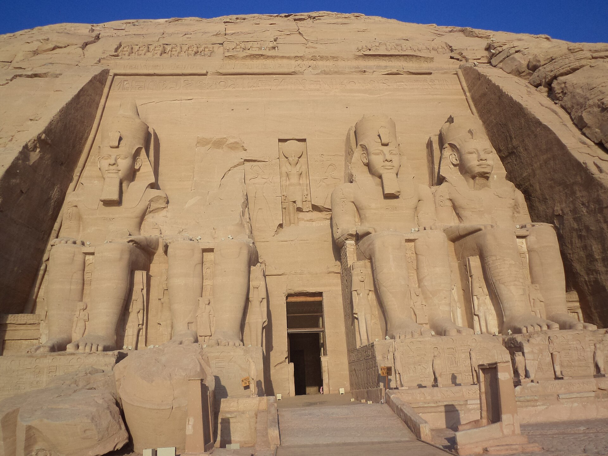
画像を拡大 ＋《アブ・シンベル大神殿》
- 作者
- 建造者不詳（ラムセス2世の時代）
- 制作時期
- 前13世紀（新王国・第19王朝）
- 所在地
- アブ・シンベル、エジプト
- 素材・形式
- 岩窟神殿・正面の四体の巨像
出典・画像について
四体の巨像が並ぶ大神殿の正面。隣接するネフェルタリの小神殿とは区別しています。
紀元前31年のアクティウムの海戦を経て、プトレマイオス朝エジプトは滅び、古代エジプトはその幕を閉じることになる。

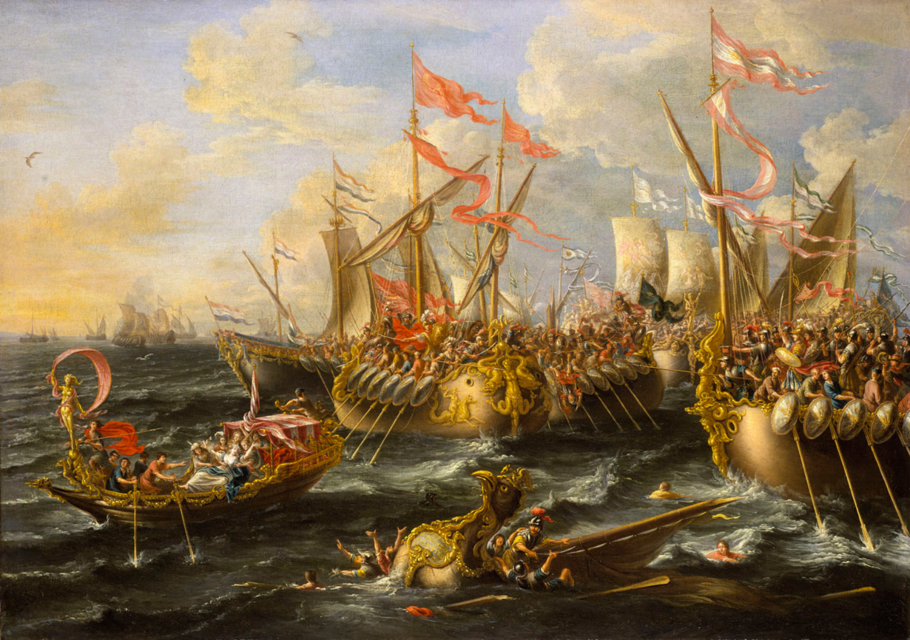
画像を拡大 ＋《アクティウムの海戦（紀元前31年9月2日）》
- 作者
- ローレイス・ア・カストロ（Laureys a Castro）
- 制作時期
- 1672年
- 所蔵館
- 国立海事博物館、王立グリニッジ博物館群、ロンドン（BHC0251）
- 素材・形式
- 油彩・カンヴァス
出典・画像について
海戦を描いた17世紀の絵画。古代エジプトで制作された美術品ではなく、歴史の説明に使われた後世の絵画です。
画像出典：Laureys a Castro / Royal Museums Greenwich・Wikimedia Commons
Public domain
海戦と王朝の終わりの年について
紀元前31年はアクティウムの海戦の年です。プトレマイオス朝が終わり、エジプトがローマに併合されたのは翌30年です。本文では、海戦を経て終幕へ至ったという関係を保持し、同じ年に王朝が滅んだと読める表現を避けました。
エジプトでは、侵入されにくい地理的な好条件と、ナイル川の氾濫がもたらす農作物によって、人々に保守的な思考が育まれた。3000年以上続いた不変の伝統は、変わらなくてもうまくやっていけたからこそ保たれたものだった。
しかし、その3000年の間に、ほかの国々は変化を続け、エジプトを侵略できるまでに成長した。エジプトが最後に侵略されたことは、変わらなかったことに対する代償だったのかもしれない。
要点まとめ
- ナイル川のエジプト文明では、ファラオを絶対的な君主とし、3000年以上変わらない固有の美術が展開した。外敵の侵略を受けにくい地理が伝統を保たせた。
- エジプト美術は死者のための美術で、死後の世界で生き続けるには肉体の保存が必要と考えられた。ピラミッドは王の遺体を永遠に保つ墓で、ミイラの技術も発展した。
- 紀元前3100年頃からの初期王朝時代には、ピラミッドの原型とされるマスタバ形式の墓が作られた。《ジェト王の碑》では天空の神ホルスが王の名の上に置かれている。召使いの代わりに像を作って埋葬するようになった。
- 平面の人物は、頭や足は横向き、目や上半身は正面向きというように、各部分の特徴が最もよく分かる角度を組み合わせて描かれた。写実的な鳥の絵から、あえて決まった描き方を選んでいたことが分かる。
- 古王国時代にはクフ王、カフラー王、メンカウラー王の巨大ピラミッドが建てられた。彫像は正面を向き、静止不動で永遠性を表した。
- 中王国時代のピラミッドは日干しレンガなどで安く作られ多くが崩壊した。神殿や祭殿が増え、オシリス柱やハトホル柱が現れた。
- 新王国時代には、パピルスにヒエログリフで呪文を記した《死者の書》が棺に添えられた。
- アメンホテプ4世（アクエンアテン）はアトンを唯一神とする一神教に没頭し、自然主義的なアマルナ美術を生んだが、死後は伝統的な様式に戻った。子のツタンカーメンの黄金のマスクにも写実主義の名残がある。
- 紀元前31年のアクティウムの海戦を経てプトレマイオス朝が滅び、古代エジプトは幕を閉じた。
確認問題
答えを考えてから開いてください。選択問題は選ぶとすぐ正誤と解説が出ます（選択肢の順番は開くたびに変わります）。各問題のリンクから該当の章や作品カードへ戻れます。
選択問題：0／5問回答・正解0
A. 一問一答答えを考えてから開く
問1エジプトの初期王朝時代から作られ、石を積み上げたような形でピラミッドの原型とも考えられる墓の形式は何か。
答えを見る
問2新王国時代に作られた、死後の国で復活し暮らすための呪文集で、パピルスにヒエログリフで記され棺に添えられたものを何と呼ぶか。
答えを見る
問3アメンホテプ4世（アクエンアテン）が唯一神として信仰した神は何か。
答えを見る
B. 4択選ぶとすぐ正誤と解説
問4エジプトで3000年以上にわたり変わらない美術の伝統が続いた背景として説明されているのはどれか。
→ 本文で確認（ナイル川の文明と長く続いた伝統）
問5エジプト美術の平面の人物表現として正しいものはどれか。
→ 本文で確認（各部分の特徴を組み合わせる描き方）
問6アメンホテプ4世の時代の、伝統に縛られない自然主義的な美術を何と呼ぶか。
→ 本文で確認（肖像とアマルナ美術の行方）
C. 図版問題画像を見て答える
問7この作品の名前を答えよ。
答えを見る
問8この《カフラー王坐像》に見られる、エジプトの彫像の特徴はどれか。
→ 作品カードで確認
問9この建築の名前はどれか。
→ 作品カードで確認